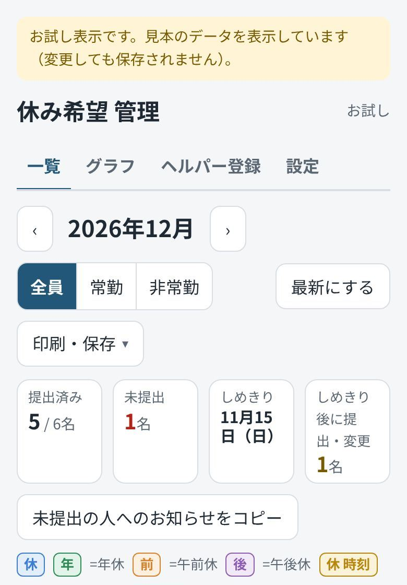
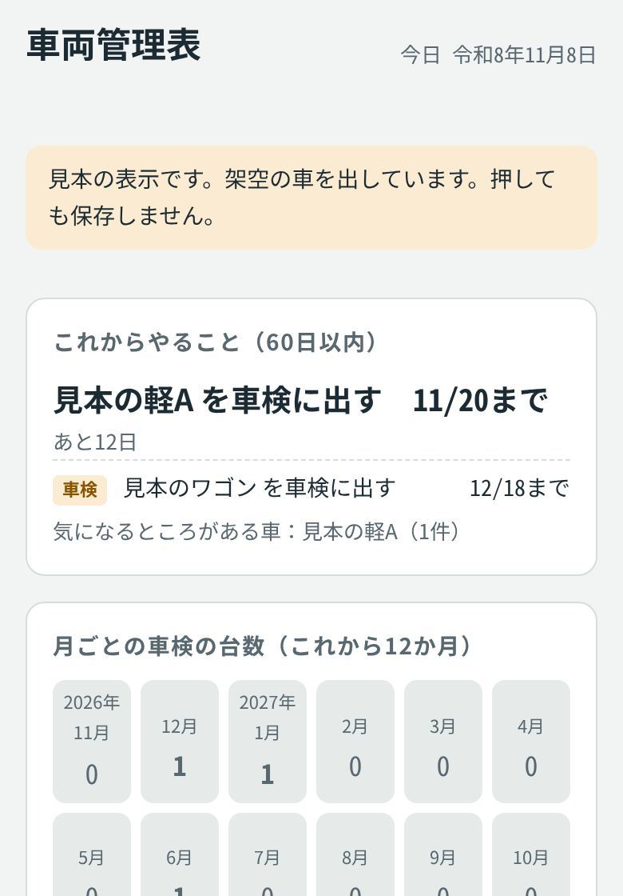
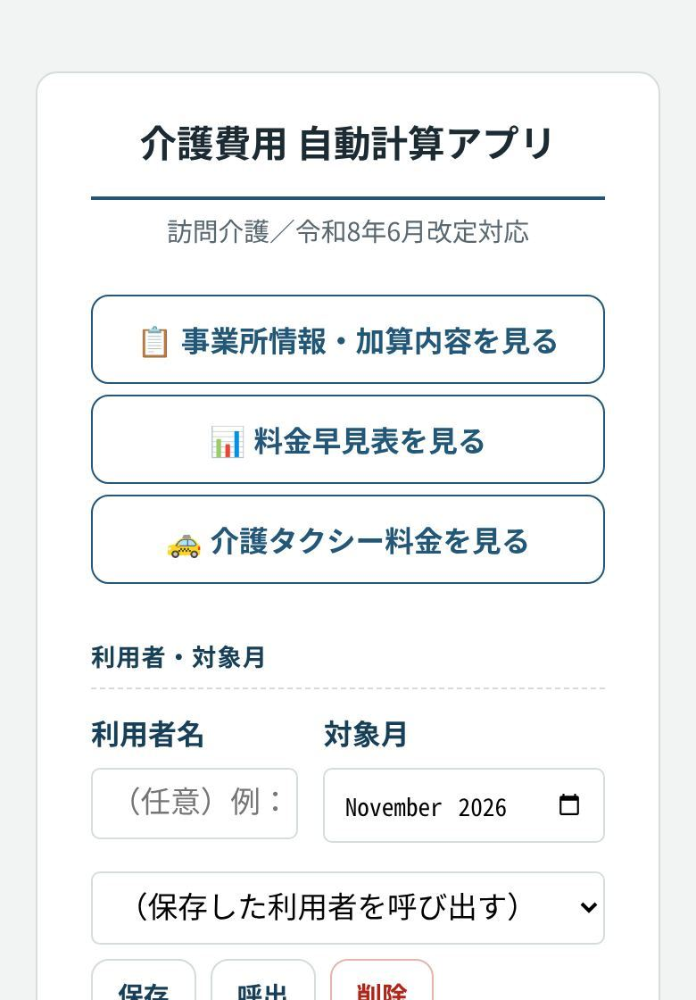

透析終了時間管理と送迎の組み方
透析が終わる時間から、お迎えの時間と車ごとの回り方を自動で組み、ヘルパーさんに送るLINEの文まで作ります。いちばん毎日使っている道具です。
見本で動かす神里 伸也yannsi works
訪問介護・障害福祉の現場で働いています
介護の仕事をしながら、毎日の困りごとを減らす道具を自分で作っています。気になる方をひらいてみてください。
工作室の作品は、スマホのブラウザでそのまま動きます。アプリのインストールやログインはいりません。
「現場でこんな道具がほしい」「うちでも使えるか聞きたい」など、お気軽にどうぞ。
yannsiworks@gmail.com訪問介護の事業所で、毎日の事務に使っている道具です。動画と写真はどれも、架空の「見本」のデータで動かした画面です。
「見本で動かす」を押すと、架空のデータでその場でさわって試せます。ログインはいらず、さわっても保存されません。
透析が終わる時間から、お迎えの時間と車ごとの回り方を自動で組み、ヘルパーさんに送るLINEの文まで作ります。いちばん毎日使っている道具です。
見本で動かすヘルパーさんがLINEから開いて、翌月の休みの希望を送ります。名前を選んで日付を押すだけです。
見本で動かす届いた休み希望を一覧とグラフで見て、勤務表に取り込みます。まだ出していない人へのお知らせ文も作れます。
見本で動かす
社用車ごとの車検日・保険・オイル交換を管理し、60日以内にやることを上に出します。
見本で動かす
サービスと回数を選ぶと、単位数と利用者さんの負担額、介護タクシーの料金を計算します。

ツール集には、いま26の道具があります。上で紹介したもののほかに、こんな道具を毎日・毎月の仕事で使っています。くわしく聞きたいものがあれば、会場で声をかけてください。
ご相談は、入口のページの下の連絡先から受け付けています。
仕事とは別に、「ネットがなくても動く」「カメラやマイクで遊べる」をテーマに作ったものです。
ほかの作品も github.com/yannsi で公開しています。